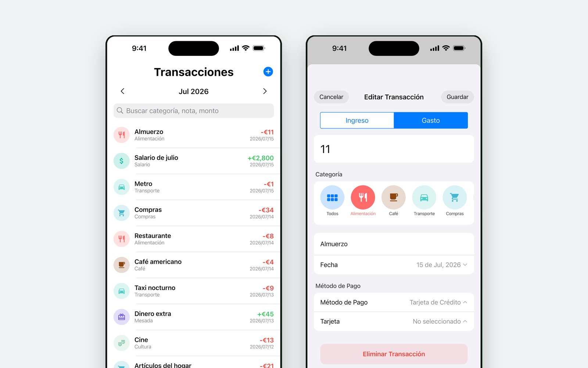
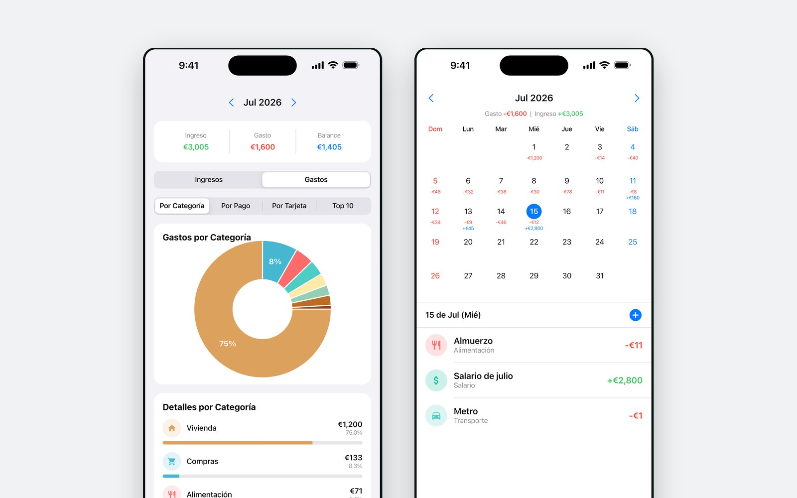
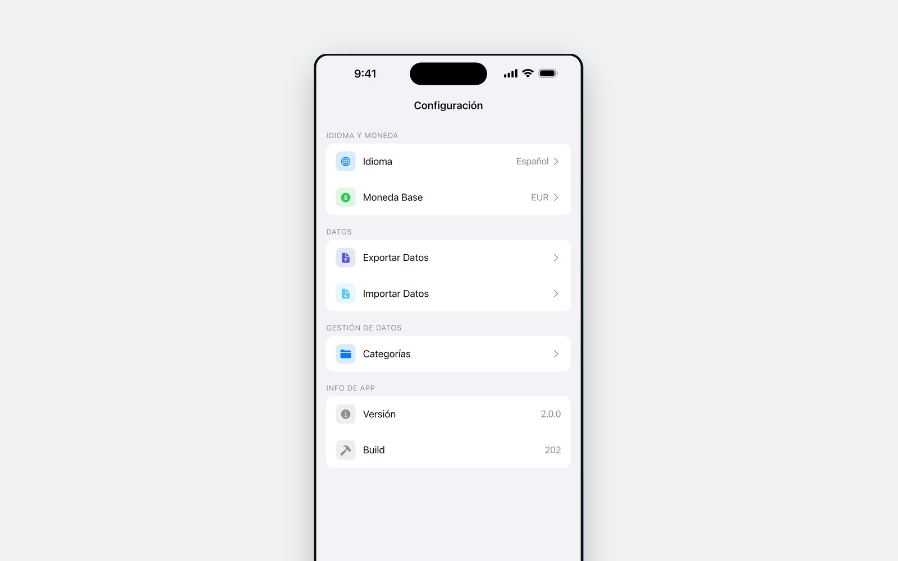

Cuatro toques y listo
Fecha, importe, categoría, método de pago. El campo de importe es una calculadora, así que una cuenta dividida se resuelve ahí mismo y no en otra app.
Anota un café en cuatro toques — fecha, importe, categoría, método de pago — y mira adónde se fue el mes en gráficos de anillo y un calendario. Sin registro, sin vincular bancos, y nada sale de tu teléfono.

La idea
La abandona porque anotar un café llevaba minuto y medio. K-Pockit está hecha para los veinte segundos al día que de verdad vas a dedicarle: la pantalla de entrada es lo primero que tocas, y todo lo que alargaría esos segundos — cuentas, vinculación bancaria, asistentes de configuración — se quedó fuera.
Lo que incluye
Fecha, importe, categoría, método de pago. El campo de importe es una calculadora, así que una cuenta dividida se resuelve ahí mismo y no en otra app.
¿Pagas en una moneda y piensas en otra? Introduce el importe extranjero y se convierte al tipo del día. Once monedas, consultadas solo cuando las pides.
El calendario lleva bajo cada día sus ingresos y sus gastos. Toca un día para ver solo los registros de ese día.
Gráficos de anillo por categoría, por método de pago y por entidad emisora, un Top 10 de lo que más gastaste, y el ingreso, el gasto y el saldo del mes.
Un límite para el mes o para una categoría. Está para que lo consultes, no para mandarte notificaciones.
Añade categorías con tu icono y tu color. Las predeterminadas son un punto de partida, no una lista cerrada.

De dónde viene
La primera versión llegó a la App Store en abril de 2026: un libro de cuentas para quien instala una app de gastos cada enero y la deja en febrero.
La 2.0 llegó en junio de ese año: rediseño, las estadísticas de anillo, las categorías propias y la exportación a CSV y JSON para que los registros nunca quedaran atrapados en la app.
La versión de Android es el mismo código Flutter. Pasó una prueba cerrada y llegó a Google Play en septiembre de 2026, con el mismo paquete que probaron los testers.
Privacidad
No hay cuenta a la que vincularlos ni servidor al que enviarlos: cada movimiento vive en una base de datos del dispositivo y desaparece cuando desinstalas la app. Lo único que sale es un código de moneda, enviado a un servicio público de tipos de cambio cuando pides una conversión. La app es gratuita y lleva un banner, de modo que Google AdMob recoge el identificador de publicidad y la información del dispositivo habituales — todo ello detallado en la política de privacidad.
Gratis en la App Store y en Google Play. Funciona sin conexión: la red solo se usa para los anuncios y para los tipos de cambio.
